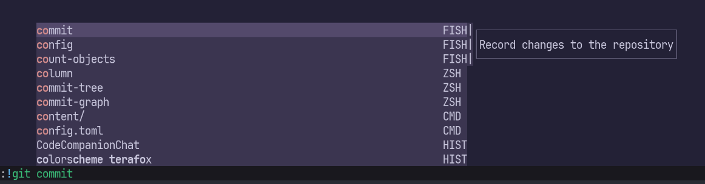

ddc.vimはVim/Neovimの補完エンジンです。状況に応じて補完候補のソースやフィルターを柔軟に変更できるところやパフォーマンスの良さが強みですね。
詳しい紹介は作者のShougoさんの記事に譲ります。
新世代の自動補完プラグイン ddc.vim
https://zenn.dev/shougo/articles/ddc-vim-beta
補完候補のソースは、カーソル周辺の単語を使うddc-source-aroundなどさまざまですが、シェルコマンドの補完には、ddc-source-shell_nativeを使うといいでしょう。
zsh, fish, xonshの補完に対応しているので、各種スクリプトや、コマンドラインで:!からコマンドを呼び出すときの補完に便利です。

ちなみにzsh以外のシェルへの対応は私がしました！
Support variety of shell such as fish and xonsh
https://github.com/Shougo/ddc-source-shell_native/pull/3
といったんサポートしたのはいいものの、補完候補が出るまでやや時間がかかるのが難点でした。
これは、補完候補を取得するたびにシェルを起動しなおしているためです。
たとえばfishなら、以下のようなスクリプトを用意していました。補完の情報源はスクリプトに引数として渡します。
#!/usr/bin/env fish
complete -C "$argv[1]"毎回起動すると遅いなら、起動しっぱなしにすればいいじゃない、ということでシェルを常駐させ、引数の代わりに標準入力を使う提案をしたところ、Shougoさんが爆速で実装してくれました。 fishスクリプト部分はこんな感じ。補完候補の列挙完了は標準エラー出力に”EOF”を出力することで通知します。
#!/usr/bin/env fish
function main
while true
set user_input (read)
if test -z "$user_input"
# Skip empty input
continue
end
complete -C "$user_input"
echo "EOF" >&2
end
end
main最近、音声ファイルをffmpegで変換する処理をストリーミングさせる処理を書いたのですが、これがddc-source-shell_nativeにも応用できると気付き、今回の提案に至りました。色んなことやるのって大事ですねー。
この手の提案はもちろんGitHubでやってもいいのですが、今回はvim-jpのSlackで行いました。 Issueだときっちり書かなきゃと意気込みがちですが、コミュニティ内でさくっと会話できるのはありがたいですね。
あれ……？そういえば # Skip empty input の時は EOF を出力してないから無限待ちしちゃうかも……？
コントリビュートチャンスしてきます！
ENJOY!!